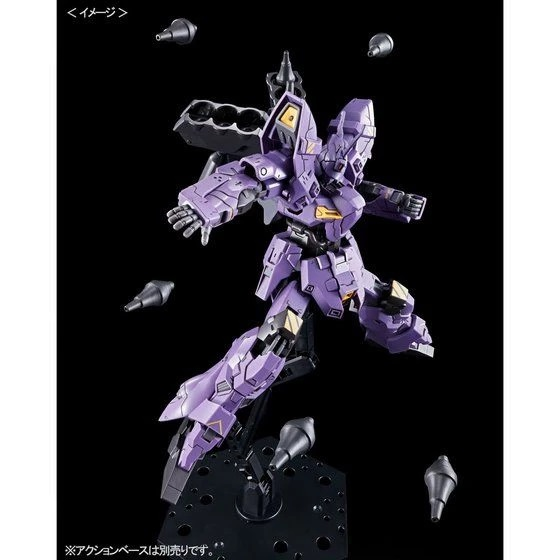
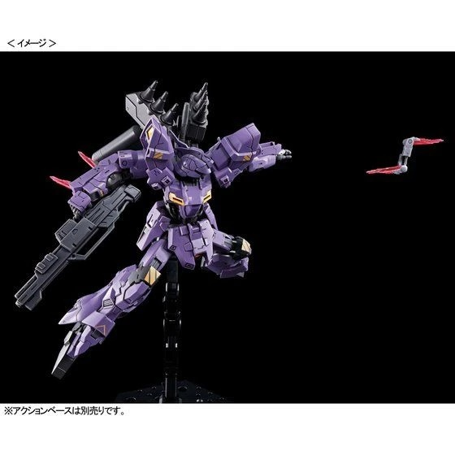
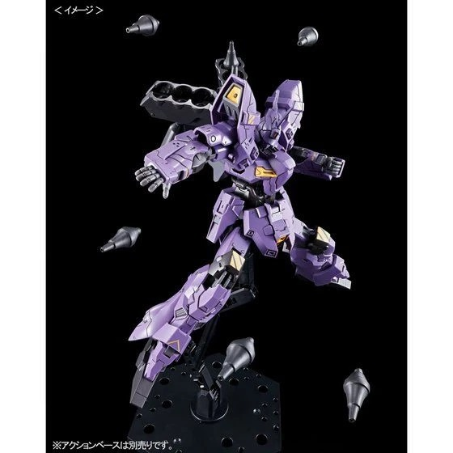
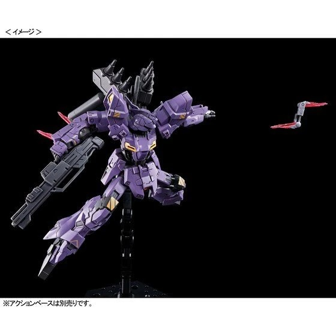

The Varguil was a prototype MS that incorporated next generation Psycommu technology. However this technology was later stripped and replaced with a more conventional Psycommu cockpit. It uses a generator 1.5 times more powerful than a Geara Doga's and has Gundarium alloy armor. Multiple thrusters are arranged across the body to make the MS more maneuverable. While boasting higher speed and maneuverability than other experimental mobile suits, it could not compete with the Jagd Doga and its Psycoframe cockpit. The Varguil was damaged during a battle with the Londo Bell forces, and subsequently repaired with the head of the Psycho Gundam Mk-IV G-Doors belonging to the Titans remnants which drifted to the Moon Moon colony. This version also has only one funnel rack, no attached propellant tanks and no funnels. Later, it also gained eight of the G-Doors' Psycho Plates.
HG Varguil [P-Bandai]
 


